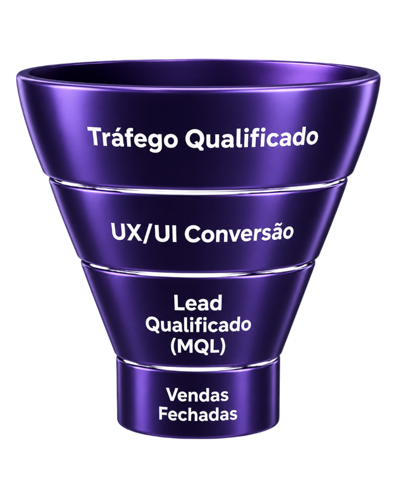
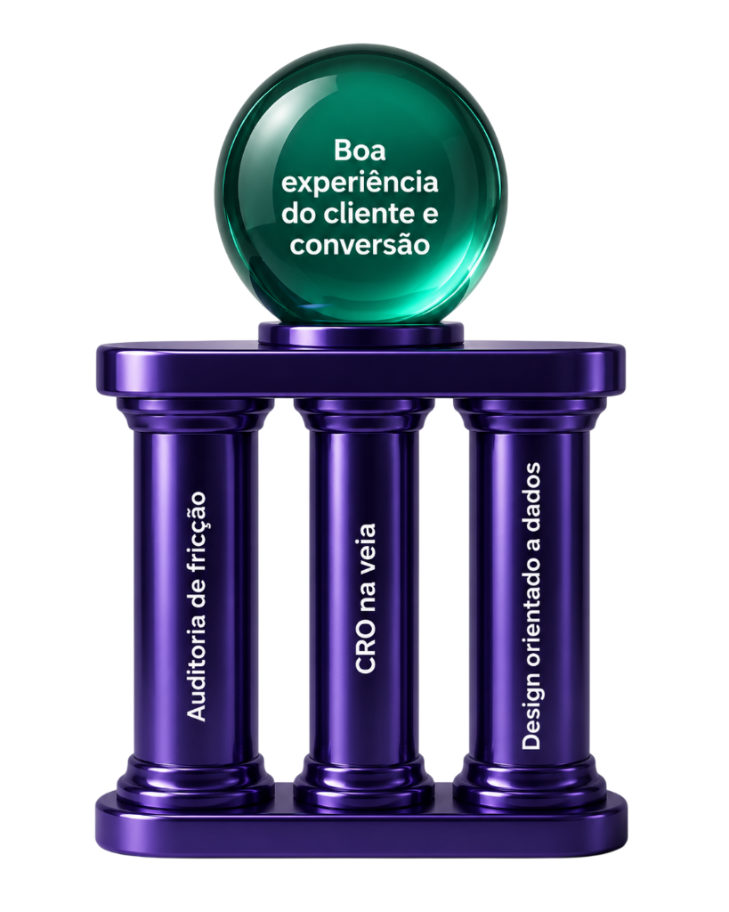

Paramos de tratar o crescimento como tentativa e erro. Conectamos estratégia, dados e design de conversão para eliminar gargalos e estruturar um motor de receita previsível para a sua empresa.
Durante anos, o crescimento foi tratado como uma soma de iniciativas isoladas: campanhas soltas, testes sem métricas claras e operações fragmentadas. O resultado? Decisões reativas, desalinhamento entre marketing e vendas, e um crescimento que não se sustenta.
Campanhas rodam, o orçamento é gasto, mas não existe previsibilidade no funil.
Dados usados para enfeitar relatórios, não para direcionar decisões estratégicas de negócio.
Vendas culpa o marketing pelos leads ruins, e o marketing culpa vendas pela falta de fechamento.
A maioria das empresas falha em crescer porque trata marketing, tecnologia e vendas como setores isolados. Nossa visão é unificar esses pilares sob um único sistema lógico e automatizado.


Atrair a atenção é apenas o primeiro passo. Transformar essa atenção em receita exige uma jornada sem atritos. Na Algoritmux, entendemos que o Design de Experiência (UX/UI) não é apenas um processo de funil, mas sim uma metodologia científica de conversão. Mapeamos comportamentos, eliminamos pontos de fuga e desenhamos interfaces intuitivas que guiam o seu cliente naturalmente até o fechamento.
Identificamos onde o seu usuário desiste da compra.
Testes contínuos de usabilidade para garantir a maior taxa de conversão possível.
Decisões visuais baseadas em mapas de calor, cliques e comportamento real, não em achismos estéticos.
Na Algoritmux, o marketing deixa de ser centro de custo. Nossa diretoria é formada por três pilares essenciais que ditam o ritmo de todas as nossas operações:
Responsável pela operação da empresa, transformando estratégia em execução eficiente e garantindo a entrega dos projetos.
Lidera a estratégia da Algoritmux, conectando inovação, tecnologia e crescimento para acelerar resultados dos clientes.
Converte dados em inteligência de negócio, desenvolvendo análises e modelos que apoiam decisões mais precisas e escaláveis.
|
Comparativo de Planos
Escolha o plano ideal para o momento e objetivo da sua empresa.
|
START
Estruture sua operação e comece a gerar demanda com base e clareza.
|
GROWTH
Otimize o funil, aumente a eficiência da aquisição e melhore a conversão.
|
SCALE
Escale com inteligência de dados, previsibilidade e integração total.
|
|---|---|---|---|
| PILARES | |||
| Geração de Demanda | Captação direta de leads para formação da base. | Campanhas multicanal, remarketing e testes de públicos, criativos, ofertas e mensagens. | Estratégia de escala com expansão de públicos, canais, ofertas e jornadas de aquisição. |
| Canais de Mídia | Meta Ads e/ou Google Ads Search, definidos conforme estratégia inicial. | Meta Ads, Google Ads, YouTube Ads e LinkedIn Ads, conforme aderência ao negócio. | Mix avançado de mídia paga, com Meta, Google, YouTube, LinkedIn e canais complementares. |
| Setup Web | Landing page inicial para apresentação da oferta e conversão. | Otimização contínua de landing pages com foco em experiência e conversão. | Evolução de UX, CRO e páginas estratégicas para aumento contínuo de conversão. |
| Inteligência de Dados | Configuração base de GA4, GTM, pixels, eventos e rastreamento de conversões. | Dashboard de performance, rastreamento de funil e análise recorrente de gargalos. | Dashboard integrado de marketing, vendas e receita, com leitura de CAC, ROI, LTV e funil. |
| CRM & Processos | Integração básica entre formulários, WhatsApp e origem dos leads. | Integração profunda com CRM, automações de entrada, distribuição e acompanhamento de leads. | Automações avançadas, lead scoring, nutrição, retention, reativação e acompanhamento de base. |
| Atuação Comercial | Definição de lead qualificado e processo inicial de repasse ao comercial. | Revisão de funil, cadências de contato, motivos de perda e oportunidades de conversão. | Forecast de vendas, análise de conversão por etapa e ajustes táticos com o time comercial. |
| Reuniões | Reunião estratégica mensal de alinhamento e priorização. | Forecast quinzenal para acompanhamento de metas, hipóteses e prioridades. | Acompanhamento tático semanal e reunião executiva mensal. |
| Relatórios | Relatório mensal com métricas essenciais, resultados e próximos passos. | Dashboard personalizado, análises executivas e leitura de comportamento com Hotjar. | Visão consolidada de aquisição, vendas e retenção para decisões orientadas por receita. |
| PARA QUEM É INDICADO | Empresas que estão começando ou precisam estruturar a operação digital e validar canais. | Empresas que já geram demanda e querem otimizar o funil, integrar vendas e escalar resultados. | Empresas que buscam escala sustentável, inteligência de receita e previsibilidade comercial. |
| FOCO PRINCIPAL | Estruturação e validação | Otimização e eficiência | Escala e previsibilidade |
Estudos de caso reais de empresas que saíram de ações fragmentadas para uma previsibilidade de ponta a ponta.
Otimização de checkout (CRO) e funis de recuperação de carrinho, reduzindo a fricção e gerando conversão recorde.
Integração do time comercial com o time de marketing, garantindo a qualificação automática de leads antes do contato.
Investir mais em mídia não resolve um processo de vendas desorganizado. Sem critérios claros de qualificação e uma passagem bem definida entre marketing e comercial, o CRM acumula oportunidades frias enquanto o orçamento se transforma em cliques sem resultado.
Foi esse cenário que encontramos em uma operação estagnada. Em vez de criar novos anúncios, reestruturamos o funil, automatizamos etapas e alinhamos os times. Com o mesmo investimento em mídia, a conversão em vendas triplicou em 90 dias.
Descubra exatamente onde seu funil está vazando e como estruturar uma operação inteligente, mensurável e focada em resultados reais para a sua empresa.